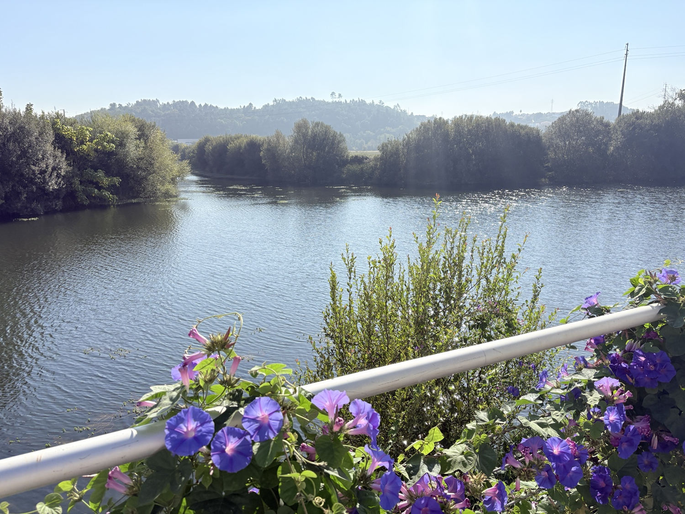
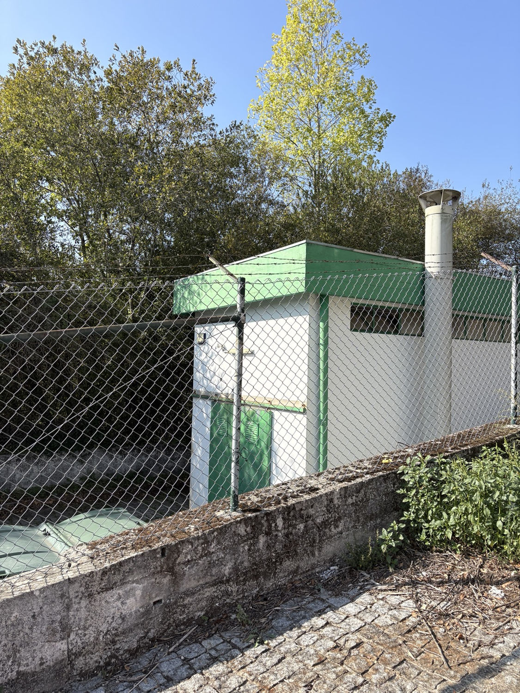
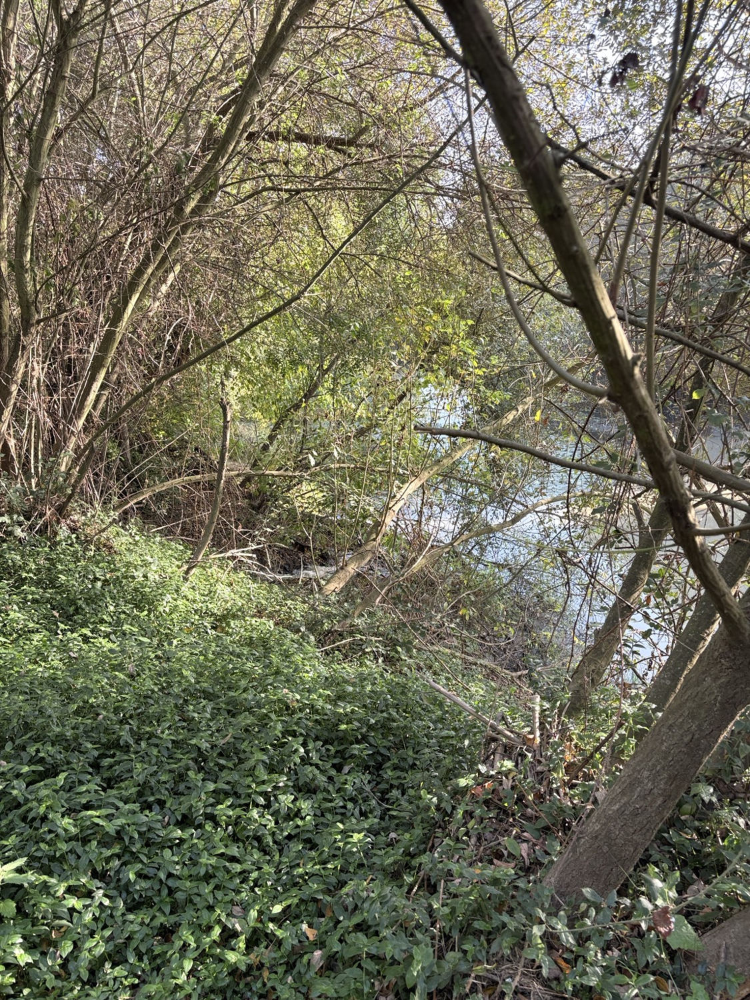
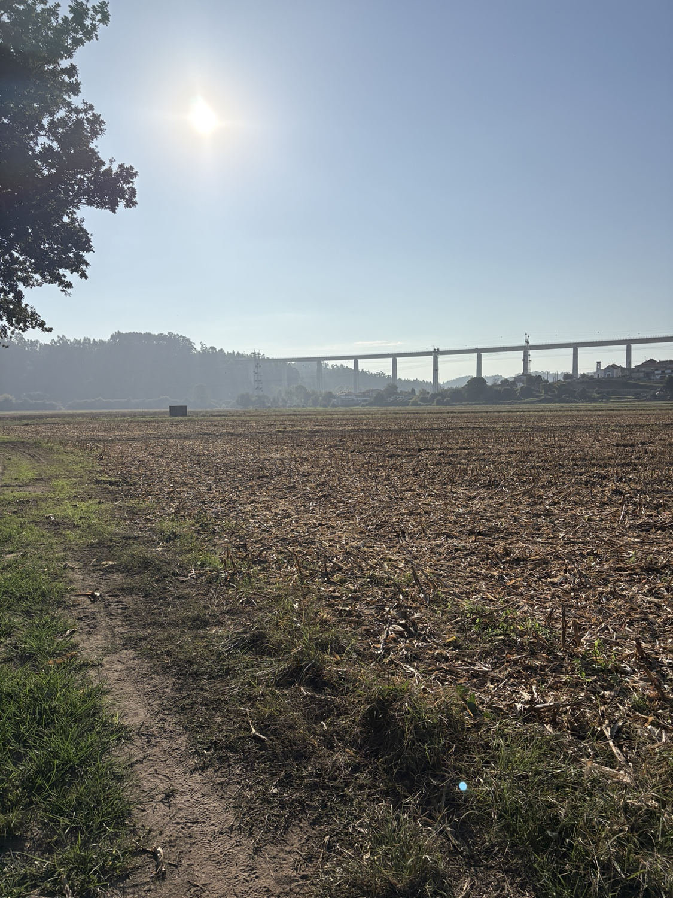
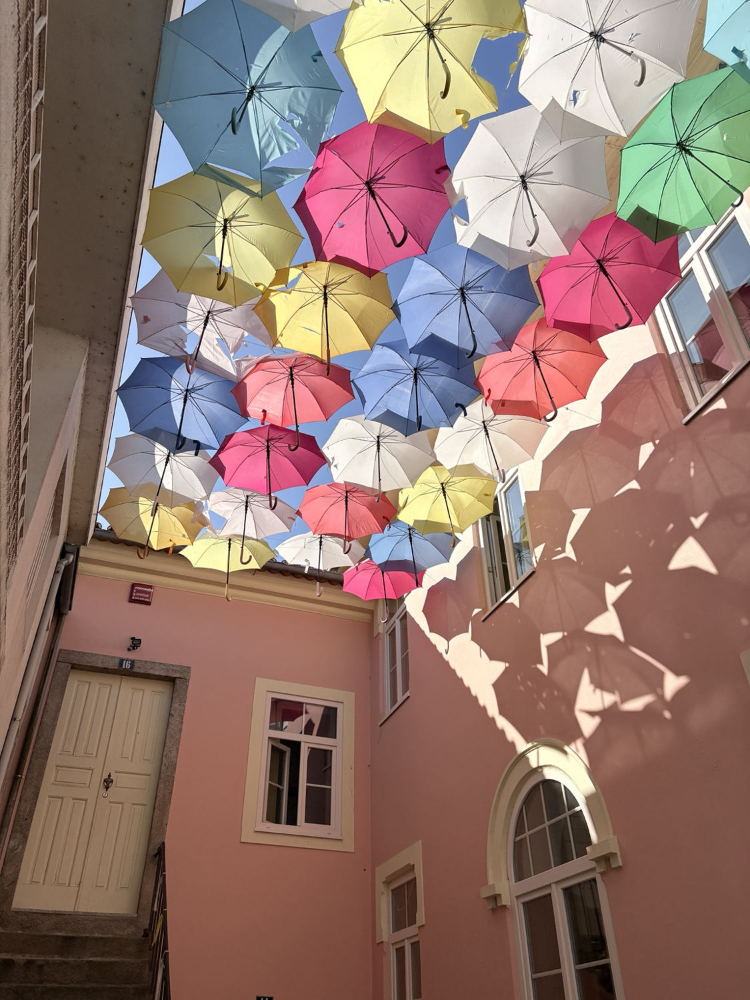

Field Notes · Outside Azurva
A Saturday walk in Águeda that we had to cut short
We came to Águeda for a peaceful Saturday walk along part of the municipal PR9 AGD — Trilho do Rio Águeda route. Instead, we encountered several different unpleasant smells, and I felt so unwell in the open fields that I decided we should turn back.
The smell was already there at the start

At around 3:15 pm, my husband and I reached the end of the riverside promenade, where the walking trail begins (40.5723374, −8.4524553). We both noticed a familiar, unpleasant smell: sewage-like, with something burnt mixed in. It reminded me strongly of the recurring smell I have experienced in Azurva. We do not know whether the sources are related.
A separate sewage smell beside the park

A few minutes later, we went towards the stairs leading up to the town park. At the bottom, next to a small fenced technical building with a ventilation pipe (40.5731368, −8.4519115), there was a much more distinct, local sewage smell. We climbed the stairs and walked in the park, where unpleasant smells could still be noticed. We do not know what the building is used for.
Manure was not the same smell
Later, on the way along the riverside and fields, we noticed an ordinary manure smell. At first we could not tell where it came from; then we saw two large heaps of manure or similar organic material with birds around them. That smell was recognisable and different from the sewage-and-burnt smell that concerned us. We did not mark the heaps' exact locations.
A strong sewage smell beside flowing water

At about 4:27 pm (40.5741343, −8.4605308), we came to a spot where the sewage smell was particularly strong. I could see a substantial, turbulent flow of water appearing to emerge from the bank and enter a watercourse. There was whitish water or foam. We could not identify where the water came from or what it contained. The smell alone does not establish that it was sewage or an unlawful discharge.
The fields — and the decision to turn back

By about 4:41–4:52 pm we were walking along open agricultural fields near Oronhe (40.5728946, −8.4663217). It was windy there, and the mixed sewage-like and burnt smell seemed to be getting stronger. I began feeling increasingly unwell. Although we still had time to walk farther, I decided that we should turn back. I was worried that continuing would make me feel even worse, and there was no longer any pleasure in the walk.
On our way back, we continued to notice the smell at various points. At 5:10 pm there was no noticeable smell on a more sheltered, tree-lined stretch. At 5:14 pm, on a more open section, it returned. Even at 5:22 pm, close to where the promenade meets the trail, the smell was still there, although less strong than it had been in the fields.
Even in the town centre

We hoped the air would be better in Águeda itself. It was somewhat easier to bear, and I began to feel better, but the odour had not completely disappeared. At around 6:23 pm we sat on a bench in town (40.5753307, −8.4470772) and both noticed a faint version of the same smell, around 1/5 in intensity. Later, at about 6:58 pm, we noticed no odour at Oronhe station with the train windows open.
A note to other walkers
This was our first visit to Águeda. Perhaps we were simply unlucky that Saturday; perhaps similar odours occur more often. I do not know how frequent they are and would not want to claim otherwise. But if you are planning a walk here for the first time, I would want you to know that this was our experience. We chose a beautiful day to enjoy the river and countryside together, yet the smells spoiled our outing and I felt so unwell that we cut it short. As much as I liked the scenery, I do not feel like returning after this experience.
Where we noticed it
These notes record selected locations and times from that afternoon. The location labels are descriptive, not identifications of emission sources. Times are approximate and local to Portugal.
- 15:20 — Technical building at the base of the park stairs (40.5731368, −8.4519115): a distinct, strong sewage smell; the smell continued during our visit to the park.
- 15:15 — Start of walk (40.572337, -8.452455): unpleasant odour noticed.
- 16:27 — Water flow (40.574134, -8.460531): unpleasant odour noticed.
- 16:41 — Open fields (40.572895, -8.466322): unpleasant odour noticed.
- 17:03 — Near homes (40.573802, -8.464267): unpleasant odour noticed.
- 17:10 — Sheltered path (40.572900, -8.459998): no odour noticed.
- 17:14 — Open path (40.572215, -8.457241): unpleasant odour noticed.
- 17:22 — Near start (40.572305, -8.452436): unpleasant odour noticed.
- 18:23 — Town centre (40.575331, -8.447077): faint similar odour.
- 18:58 — Oronhe station (40.572529, -8.476824): no odour noticed.
The sheltered, tree-lined section around 17:10 had no noticeable smell. On a more open section a few minutes later, we noticed it again. We felt wind in the open fields, but did not measure its direction or speed there. Later, at Oronhe station, we noticed no smell despite the train windows being open.
What I reported
On 17 October I sent an initial report about the locations near the beginning of the walk to AdRA, copied to Águeda City Council. I am keeping the observations from this visit separate from my longer-running Azurva odour log. Other correspondence will only be marked as sent after it has actually been submitted.
This was a single afternoon of personal observations, not air or water sampling. A similar smell in Águeda and Azurva does not prove a shared source. The observed water flow has not been shown to be an illegal discharge, and no company or facility is identified as responsible.